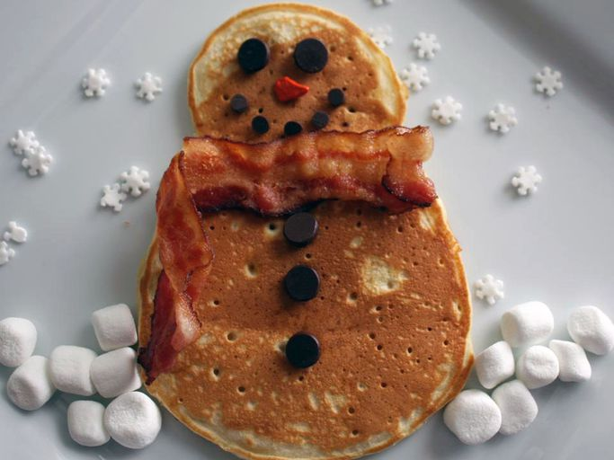

Pancakes

Description
A pancake is a thin, flat, circular piece of cooked batter made from milk, flour, and eggs
This pancake recipe produces thick, fluffy, and all-around delicious pancakes with just a few ingredients that are probably already in your kitchen
Ingredients
- Flour
- Baking Powder
- Sugar
- Salt
- Milk
- Butter
- Eggs
Steps
- Sift the dry ingredients together.
- Make a well, then add the wet ingredients. Stir to combine.
- Scoop the batter onto a hot griddle or pan.
- Cook for two to three minutes, then flip.
- Continue cooking until brown on both sides.